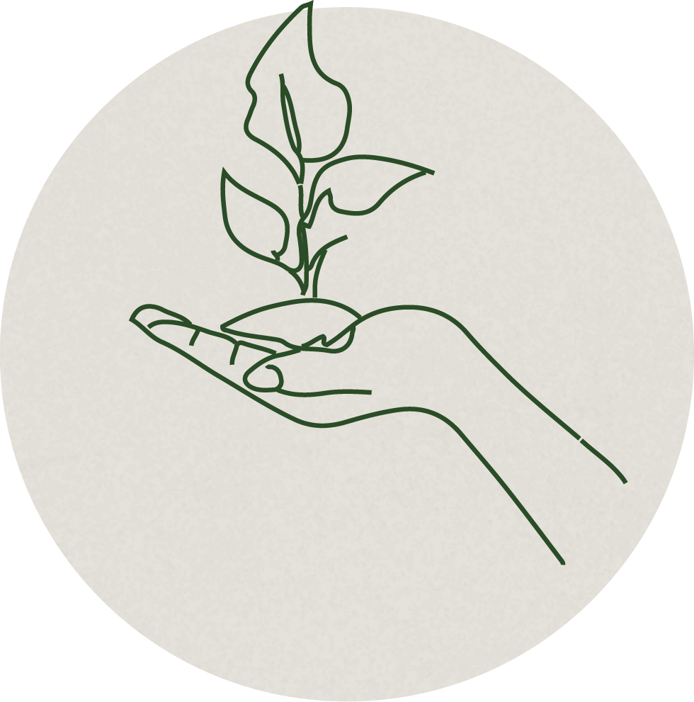
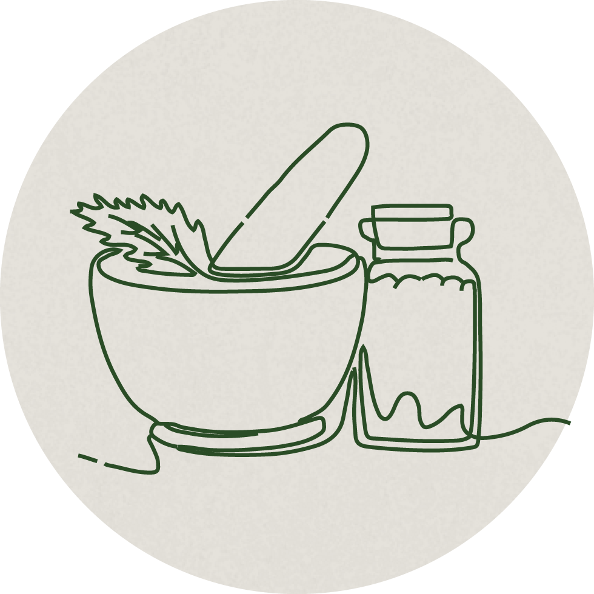
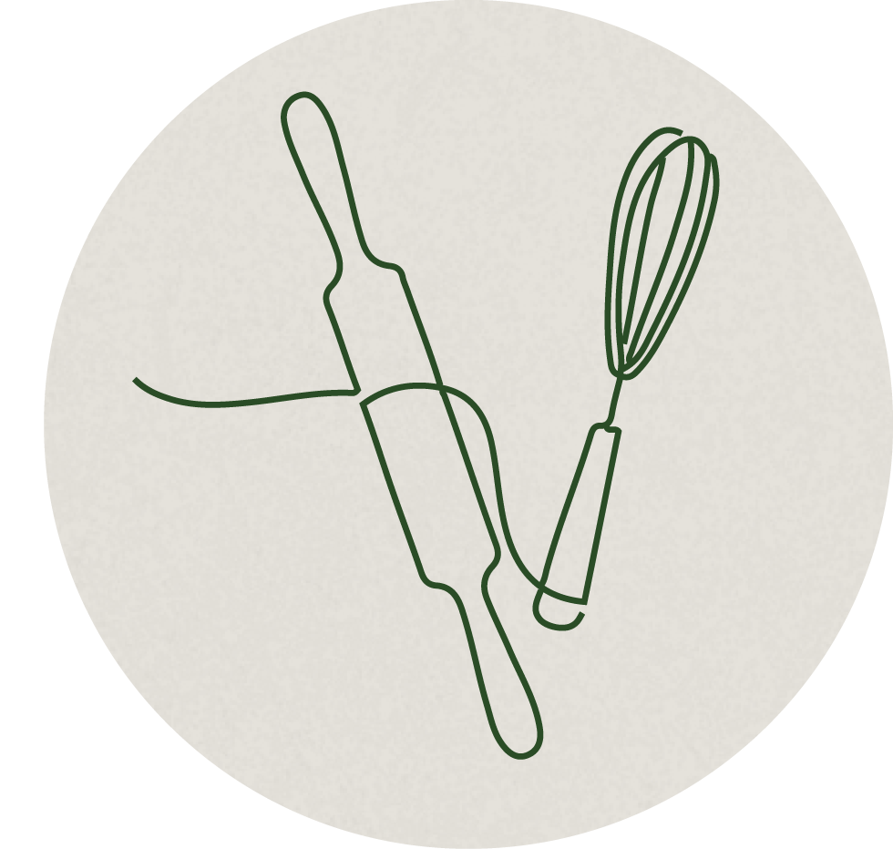

By Dali Solene
“When we listen to the rhythm of the earth, we awaken the ancient alchemy that turns food into medicine, nourishment into healing, and community into belonging.” — Dali Solene
Introduction
Green Root Concepts bridges ecological science and ancestral wisdom to rebuild the relationship between land, food, and human vitality. We design regenerative systems that restore soil fertility, capture water, and increase biodiversity — while teaching how nourishment, biology, and culture are deeply interconnected.
The Living Ecosystem
The Kitchen, the Land, and the Classroom — each a reflection of how nourishment regenerates life.

Living landscapes and food forests that restore fertility, biodiversity, and harmony.

Teaching how to eat, grow, and source food in ways that deepen connection to the earth.

Seasonal, intentional cuisine that nourishes the body and balances the nervous system.
Tending to spaces with the same intention and precision as land and food.